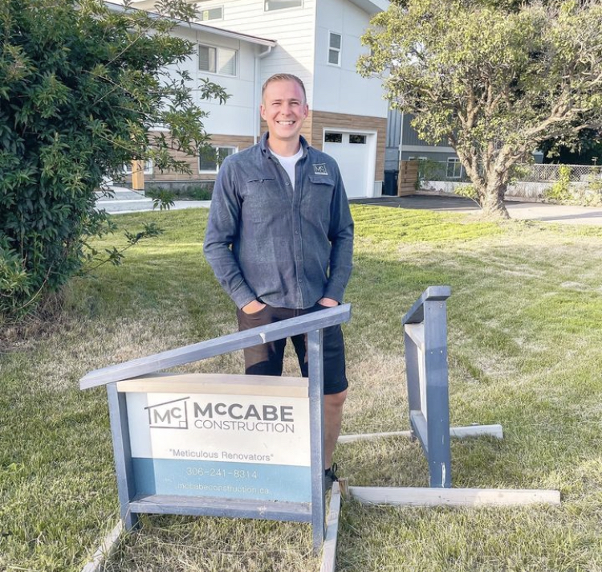

About

Organization is the cornerstone of his work ethic. He believes that a well-structured project timeline and systematic workflow are crucial for meeting deadlines and maintaining clear communication with clients. This level of organization not only fosters a productive work environment but also instills confidence in his clients, who can trust that their vision is being brought to life in an orderly and professional manner. Client interaction is at the heart of his business philosophy. He understands that a renovation can be a daunting process for many homeowners, and strives to make it as collaborative and stress-free as possible. By actively listening to his clients’ needs and preferences, he builds strong relationships based on trust and transparency. He views each project not just as a job but as a partnership, where his role is to guide his clients through the entire process, offering expert advice and innovative solutions tailored to their unique aspirations. He is continually seeking to expand his knowledge and expertise in the latest renovation trends and technologies to better serve his clients. Staying informed about industry advancements allows him to provide modern solutions that enhance both functionality and aesthetic appeal in every space he creates. In summary, his commitment to detail, organization, exceptional client relations and cleanliness makes him standout from the crowd. He is passionate about turning his clients’ visions into reality, one project at a time, and is excited to continue doing what he loves while making a positive impact on the lives of the people he serves.